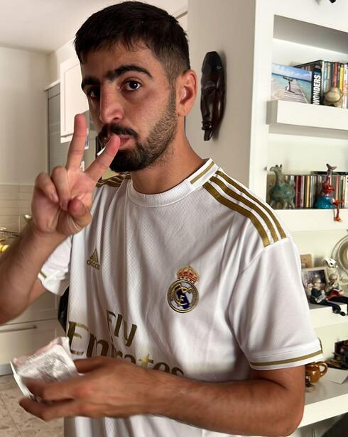
הבית הקסום לזכרו של סמ"ר עדי צור ז"ל
גיבור ישראל שהגן בגופו על קיבוץ כיסופים ב־7 באוקטובר. עדי בחר דווקא בלני, כלבה שאיש לא העז להתקרב אליה — ושיקם אותה באהבה אינסופית.
אנחנו מחלצים כלבים מהרחוב, מההסגרים וממצבי הזנחה קשים — ונותנים להם אוכל, טיפול רפואי, בית, ומעל לכול: את ההרגשה שהם אהובים.
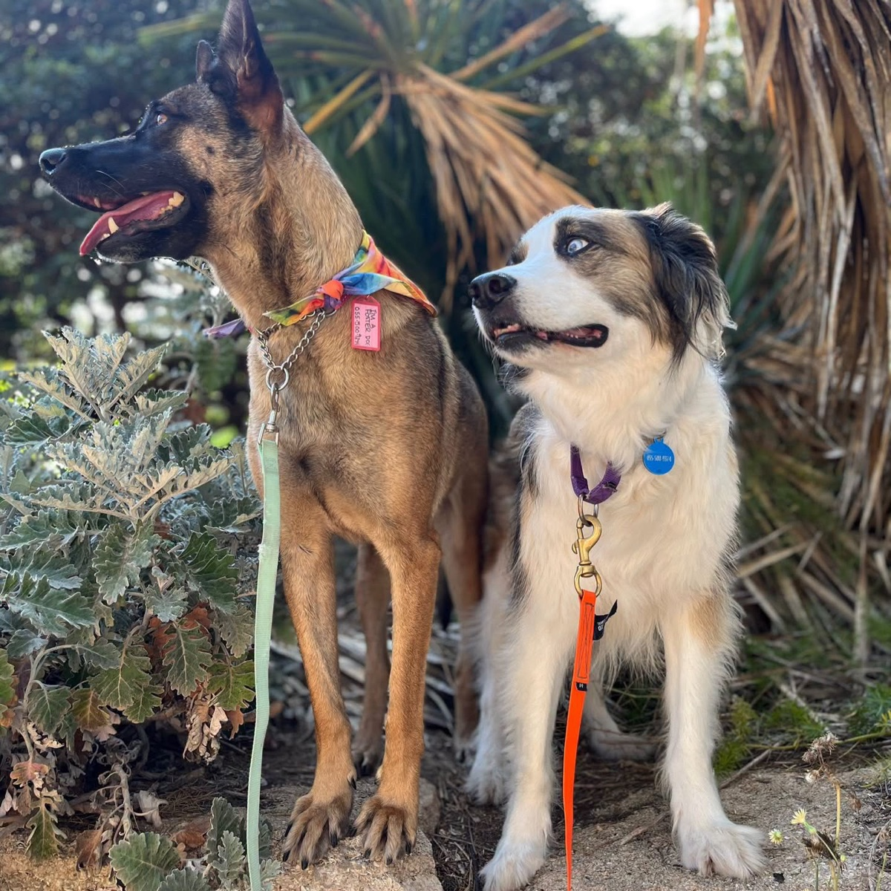
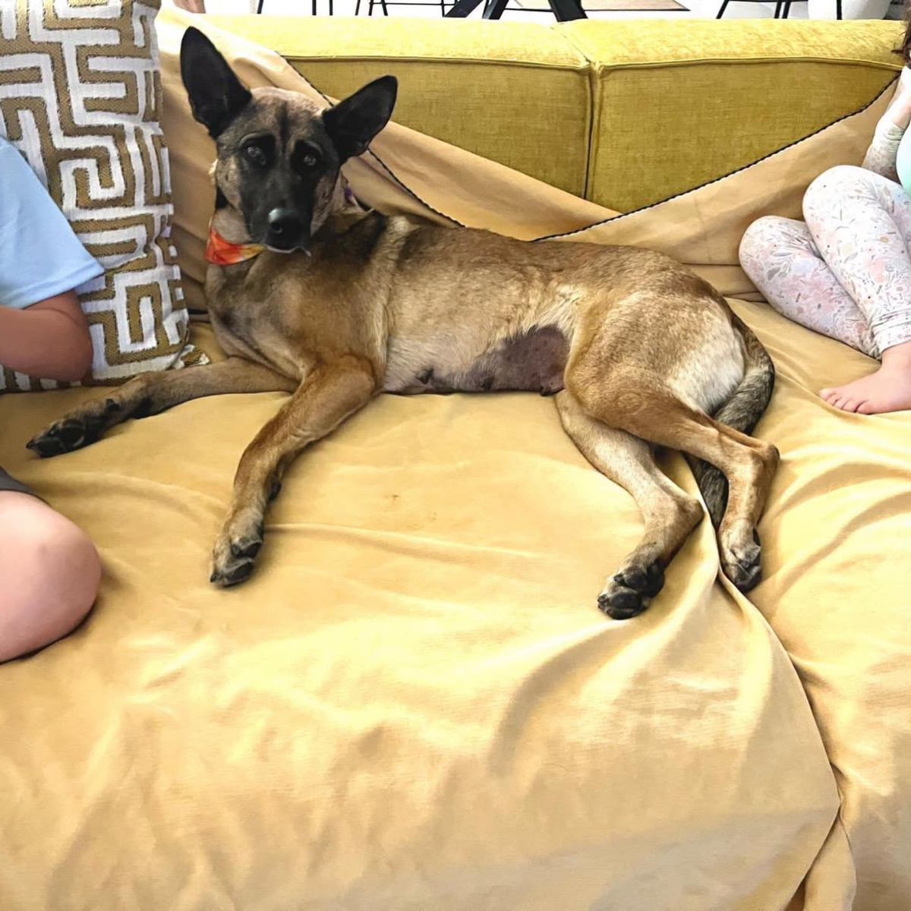
יש רגע אחד שבו הכלב מבין שהוא נשאר לבד. זהו רגע שבו האמון נשבר והלב שלו נסגר.
בעמותת חיים של אחרים אנחנו נלחמים כדי שהרגע הזה לא יהיה סוף הסיפור שלהם. בכל יום אנחנו מחלצים כלבים מהרחוב, מההסגרים וממצבי הזנחה קשים. אנחנו נותנים להם אוכל, טיפול רפואי, בית — ומעל לכול, את ההרגשה שהם אהובים.
עמותת חיים של אחרים נוסדה בשנת 2016 על ידי טלי עבאדי ודבורה אטיה, במטרה להציל כלבים מהרחוב ומההסגרים ברחבי הארץ.
חיים של אחרים היא עמותה ללא מטרת רווח (מלכ"ר) הפועלת על טהרת ההתנדבות, ומצילה מאות כלבים בכל שנה מהמתה — במטרה להעניק להם הזדמנות שנייה לחיים.
העמותה דוגלת בקידוש החיים ולעולם אינה ממיתה כלבים. כל כלב שמגיע אלינו נשאר תחת חסותנו, מטופל ואהוב — עד שיאומץ, או עד שיגיע לשיבה טובה.
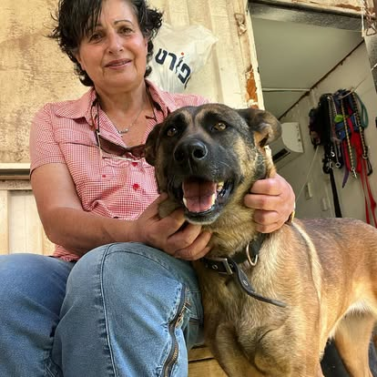
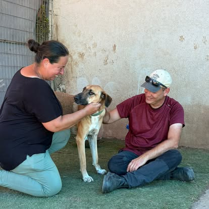
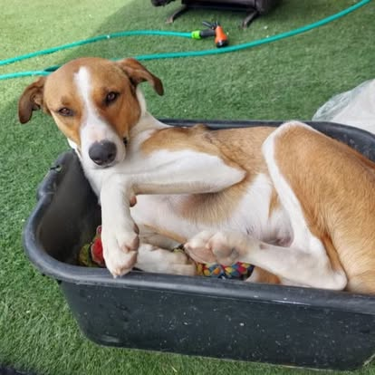
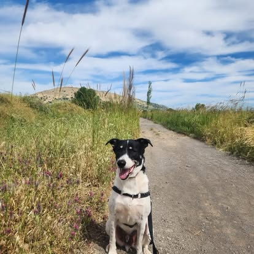
ייחודיות העמותה מתבטאת בפרויקט הדגל: במקום כלובים — בתים. אנחנו משכנים את הכלבים בשלושה "בתים קסומים". במקום לשהות מאחורי סורגים, הכלבים חיים בבתים חמים המעניקים ביטחון ומשפחתיות.
👆 הכתבה שנעשתה על העמותה בערוץ 12
הבתים הקסומים הם פרויקט הנצחה לזכר יקירים שנפלו ונרצחו במלחמת ה־7 באוקטובר. בבתים אלו מורשתם ממשיכה לחיות — דרך הצלת חיים ונתינה לבעלי חיים.

גיבור ישראל שהגן בגופו על קיבוץ כיסופים ב־7 באוקטובר. עדי בחר דווקא בלני, כלבה שאיש לא העז להתקרב אליה — ושיקם אותה באהבה אינסופית.
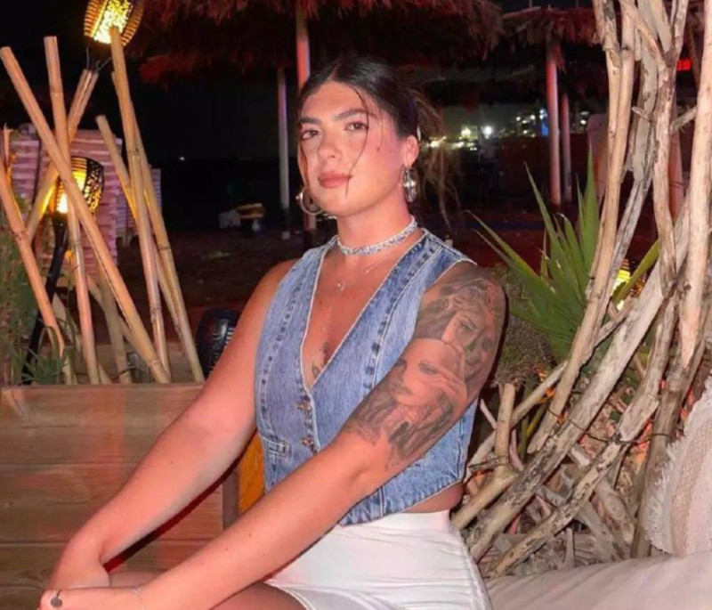
קרן אור של חמלה שנרצחה במסיבת הנובה ברעים. החלום הגדול של שני היה להקים בית מחסה משלה — ואנחנו מגשימים אותו בשבילה, כל יום מחדש.
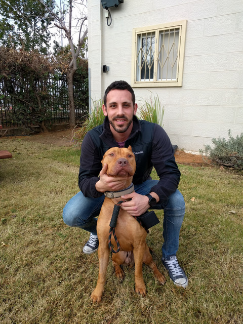
גם מהשטח בעזה לא שכח יאיר את הנשמות האבודות. ברוס, הפיטבול שאימץ, ממשיך היום את דרכו — בבית אחיו.
כל אחד מהם עבר דרך ארוכה. אפשר לאמץ, ואם אי־אפשר — אפשר לאמץ וירטואלית: חסות חודשית שמכסה אוכל, חיסונים וטיפול.
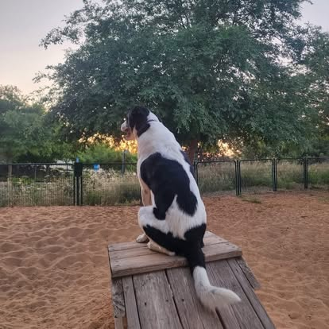
רגוע, עדין, מחונך לבית וטוב עם אנשים, ילדים וכלבים. הבטיחו לו בית — וביטלו. עכשיו תורכם לא לוותר עליו.
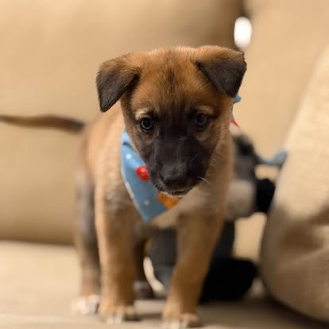
גל לא צריך תיקון — הוא צריך ילדות. גורון קטן, עדין, חכם ומלא אמון, שגדל עכשיו בבית המחסה.
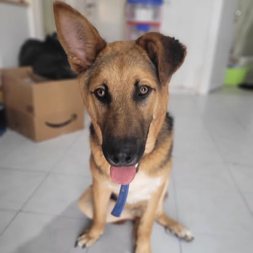
יש אנשים שמבינים את היופי שבשקט — ג׳וני צריך בדיוק אנשים כאלה. האומנה שלו מסתיימת, והוא זקוק לבית אמיתי.
חולצה ממגרש גרוטאות. מדהימה עם אנשים וילדים — אבל עדיין מחכה שהסוף הטוב שלה יגיע.
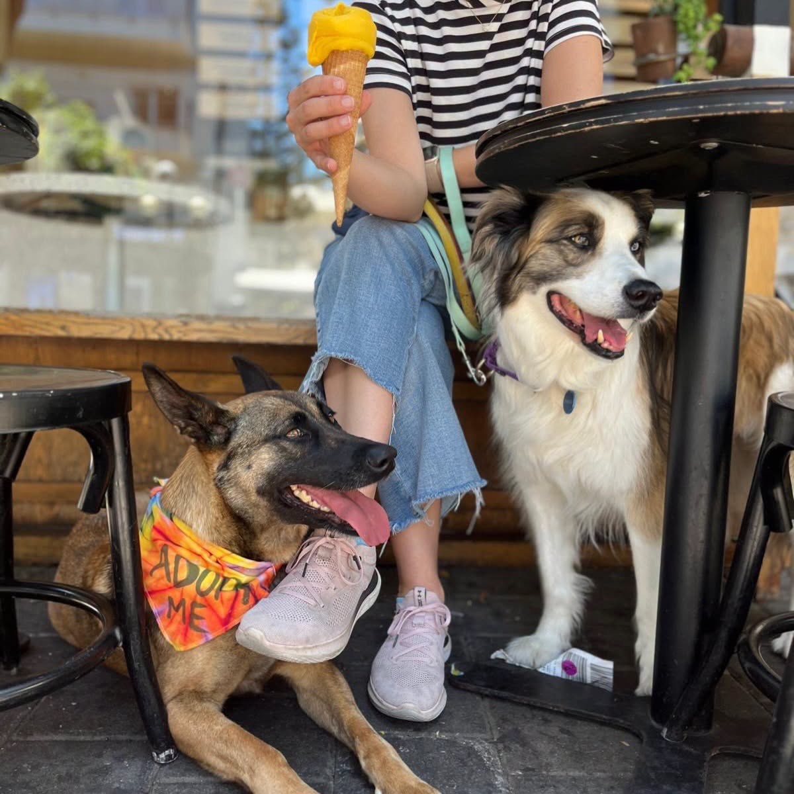
אתם לא צריכים להיות מושלמים כדי לאמץ את בל. אתם רק צריכים להיות אלה שלא יוותרו עליה.
גדלו בבית מגיל חודש וננטשו יחד בכלבייה. רגועים, מחונכים ואוהבי אדם — מחפשים בית שיקבל את שניהם.
אומרים שהדברים הכי טובים מתגלים לאט — עומרי הוא בדיוק כזה. תנו לו רגע, והוא יתפוס לכם את הלב.
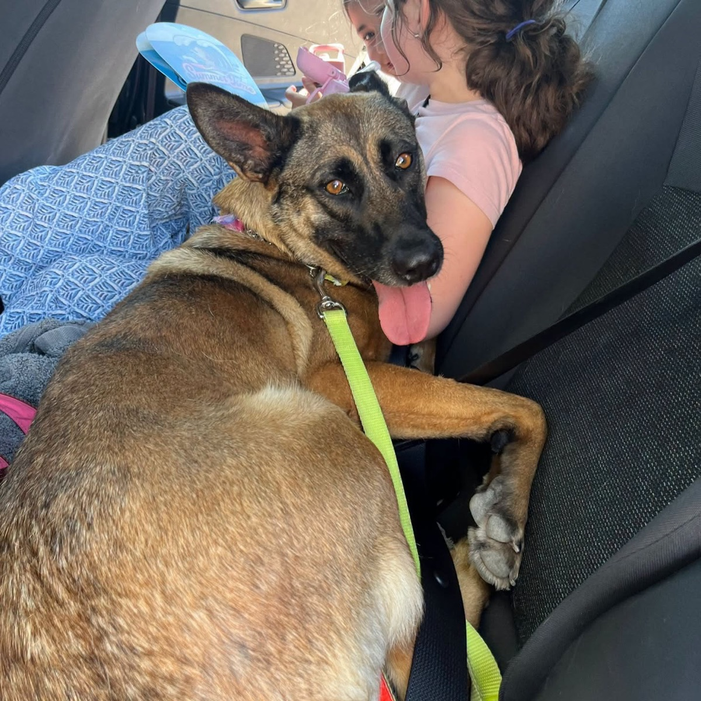
העמותה משלמת 1,200 ₪ בחודש למשפחת אומנה עבור זום! כל מה שהוא צריך זה בית זמני ולב פתוח.
* התמונות מתוך פעילות העמותה. כל הכלבים לאימוץ עם פרופיל מלא ומעודכן — בעמוד העמותה ב־Yad4 ←
לא כל אחד יכול לפתוח את הבית — אבל כל אחד יכול לפתוח את הלב. בחרו כלב מהגלריה, ובחסות חודשית קבועה תלוו אותו מקרוב: תקבלו עדכונים, תמונות וסרטונים — והוא יקבל את כל מה שהוא צריך.
סיפורים אמיתיים מתוך העמוד שלנו. אותו כלב, חיים אחרים.
רוני ולונה גדלו יחד אצל אדם ערירי, ואחרי פטירתו נזרקו להסגר בגיל 11. ידענו שהסיכויים שלהם למצוא בית קלושים — אבל לא יכולנו לתת להם למות בלי יד מלטפת. הם היו הדיירים הראשונים בבית הקסום ע"ש עדי צור, טופלו שם במסירות אין־קץ, וחיו הרבה מעבר לציפיות — כמעט עד גיל 14. כשהגיע יומו של רוני, הווטרינרית הגיעה אליו הביתה, וכולנו חיבקנו אותו בדרכו האחרונה. זו ההבטחה שלנו לכל כלב: שיבה טובה, בבית, באהבה.
כלב פיטבול עם לב זהב, שחיכה שנים בבית המחסה שמישהו יראה אותו מעבר לסטיגמות. יאיר כץ ז"ל היה זה שפתח לו את הלב והפך לחברו הטוב ביותר. אחרי נפילתו של יאיר בעזה, אחיו אימץ את ברוס אליו — ואהבה אמיתית, מסתבר, פשוט עוברת הלאה.
לני עברה התעללות קשה וחיכתה שנים בבית המחסה, מפוחדת כל כך שאיש לא העז להתקרב אליה. עדי צור בחר בה דווקא בגלל הקושי שלה, ובסבלנות של מלאך החזיר לה את האמון בבני אדם. אחרי שעדי נפל בהגנה על קיבוץ כיסופים, הוריו אימצו את לני אליהם — היום היא הנחמה שלהם, והם הביטחון שלה.
לפני כמעט שלוש שנים הוצאנו את רני מההסגר — אחד הכלבים המתוקים והטובים שפגשנו. הוא אומץ, ושמחנו כל כך בשבילו. ואז קיבלנו את הטלפון שאף עמותה לא רוצה לקבל: רני חוזר. לא בגללו — הוא לא אשם. רני בן 4, טוב ומלא אהבה, מסתדר עם כולם. עכשיו הוא מחפש אדם אחד שיבטיח לו באמת: הפעם זה לתמיד.
אני רוצה להיות הבית של רנימדהימה עם אנשים, ילדים, תינוקות וכל הכלבים. אדישה לחתולים, מחונכת מאה אחוז, יודעת להישאר לבד בבית בנחת, אוהבת להתכרבל וגם לשחק. בת שנתיים, בריאה ומטופלת. בל מבינה סיטואציות וניגשת לכל מצב באהבה — היא תהיה בת משפחה מדהימה לכל בית.
אני רוצה לאמץ את בלחולצה ממגרש גרוטאות כשהייתה גורה. היום היא כלבה צעירה, בריאה ומדהימה עם אנשים וילדים — והפרק הבא בסיפור שלה, הבית הקבוע, עדיין מחכה להיכתב. אולי אצלכם?
הסיפורים מתוך עמוד הפייסבוק שלנו — שם תמצאו עדכון חדש כמעט כל יום 🐾
העמותה פועלת על טהרת ההתנדבות — ברמת אפעל ובכל הארץ. כל זוג ידיים, וכל לב, עושים הבדל אמיתי.
שעה בשבוע של טיול, משחק בשדות של רמת אפעל — ואוזניים מאושרות.
בית זמני לכלב בשיקום — עד שיימצא לו הבית הקבוע. העמותה מלווה ומממנת הכול.
הסעת כלבים לווטרינר, לאימוצים ולבתים הקסומים.
תמונות וסרטונים שעוזרים לכל כלב למצוא משפחה מהר יותר.
אנו זקוקים לעזרתכם כדי להמשיך לממן מזון, טיפול רפואי ואת אחזקת הבתים הקסומים. ללא תמיכתכם, לא נוכל להמשיך להילחם על חייהם של הכלבים הנטושים.
תרומה מאובטחת (סליקת Grow/משולם), חד־פעמית או חודשית.
לתרומה מאובטחת ←ביט: 052-8296622
פייבוקס: 054-6881116
למוטב: חיים של אחרים
בנק מזרחי טפחות (20)
סניף כנפי נשרים (539)
חשבון: 497218
לתורמים מחוץ לישראל — תרומה מהירה ומאובטחת בפייפאל.
paypal.me/savingthedogs ←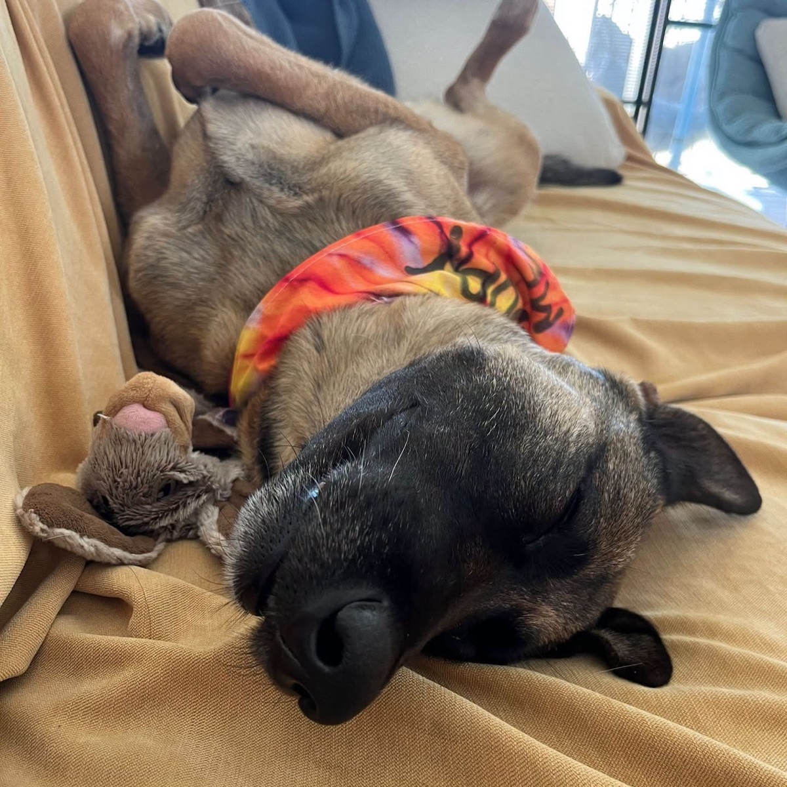
קערה אחרי קערה, שק אחרי שק. עשרות כלבים תלויים בנו בכל יום — ואנחנו תלויים בכם. גם תרומה קטנה ממלאה עוד קערה.
זום צריך רק בית זמני ולב פתוח. את כל השאר — אוכל, וטרינר וליווי — אנחנו מממנים.
נמצאים ברמת אפעל. מוזמנים לתאם הגעה: 054-6881116 — כל תרומת ציוד מתקבלת בזנבות מכשכשים.
מלאו את הפרטים ונחזור אליכם — או שלחו לנו הודעה ישירה בוואטסאפ. לפני כל אימוץ נערוך שיחת היכרות ושאלון התאמה, כדי לוודא שכל כלב מגיע לבית הנכון בשבילו.
📍 רמת אפעל · ☎ טלי 054-6881116
💬 דברו איתנו בוואטסאפ